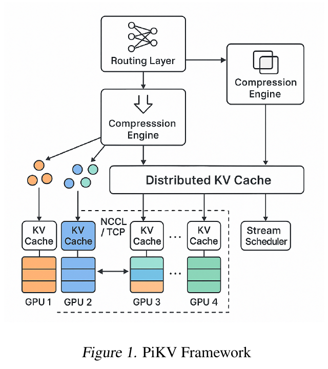
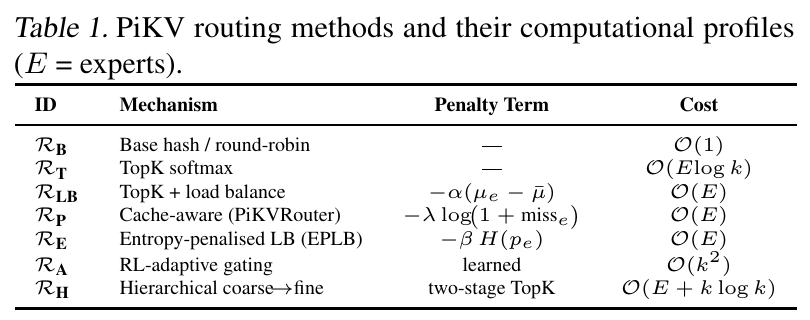
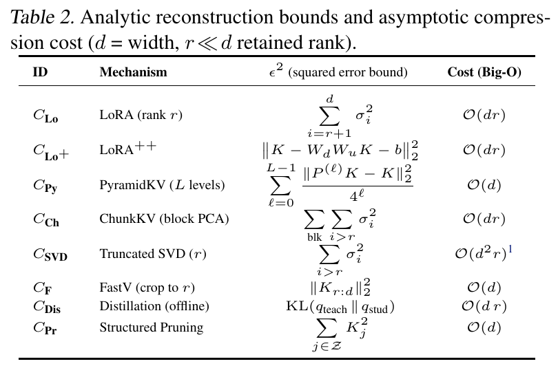
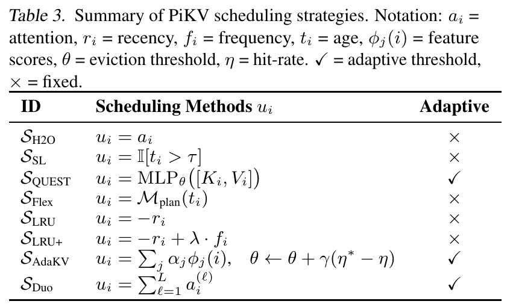

PiKV 的核心思路是把三种操作组合起来：路由缩小 KV 的访问范围，压缩减少每条 KV 的存储量，调度在有限容量下决定哪些 KV 页保留或加载。 三者共同减少推理时的内存占用与数据搬运。论文的主要价值在于这种系统整合；理解各模块的作用和配合，比逐项推导其成本公式更重要。
本文依据 PiKV 论文 v3，围绕三个模块解释其优化原理。文中的小例子用于辅助理解，不是论文实测结果。
主要工作与优化目标
生成新 token 时，注意力需要读取历史 token 的键和值，这些数据保存在 KV 缓存中。缓存避免了历史 K/V 的重复计算，但每一步仍要读取参与注意力的那部分数据。因此，上下文变长会同时带来两个问题：缓存占用更多内存，注意力需要搬运更多数据。
混合专家模型（Mixture of Experts，MoE）让每个 token 只经过少量前馈专家，减少专家计算；历史 KV 的读取量却不会因此自动减少。PiKV 希望把这种“只处理一部分”的思路延伸到缓存访问上。论文，§1、§3
| 模块 | 决定什么 | 怎样帮助推理 |
|---|---|---|
| 路由 | 本次查询访问哪些专家对应的 KV 分片 | 缩小查找和读取范围，减少相关通信 |
| 压缩 | 每条 KV 用多大的表示保存 | 降低缓存占用和读取字节数 |
| 调度 | 哪些 KV 页保留、加载或移出缓存层 | 把有限容量用于更有用的数据，控制活跃工作集 |


图中的分布式缓存是三种操作共同作用的对象：选择要访问哪些部分，将数据以更小的形式保存，再动态管理需要保留和加载的内容。下面按这个顺序解释。
路由：缩小本次查询的 KV 访问范围
路由的输出是一份选择清单。 PiKV 把 KV 按专家和 token 组织成分片，分布到不同 GPU；每次查询只选择一部分专家，随后访问这些专家对应的缓存。这里的“按专家组织 KV”是 PiKV 的设计，普通 MoE 的前馈专家并不天然各有一份独立的注意力 KV。论文，§3.1–3.2
论文算法 1 的关键步骤是：
是当前查询， 是路由函数， 是选中的专家集合； 表示整个缓存， 就是选中专家对应的缓存内容。后一个式子表示：注意力使用这部分 KV 计算输出 。
在评分式路由中，门控（gating）负责根据当前查询给各个专家打分，再据此选择参与本步的专家。按分数选出最高的 个，称为 Top-k 选择，得到的就是前文的集合 。
例如四个专家分数为 [0.1, 0.7, 0.2, 0.6]，取 ，就选择第 2、4 个专家，并访问对应的缓存组。门控分数决定排序， 决定选择数量；二者共同决定访问范围。
论文表 1 列出了路由的不同实现：


表中的 RT 按分数取 Top-k；RLB 进一步考虑负载，减少继续选择繁忙专家的机会；RP 考虑缓存未命中次数，降低访问需要额外加载数据的分片的机会。这些附加信息把选择与实际系统成本联系起来。 RB 则使用哈希或轮询规则，无需按查询学习评分。表中各行是可选方法，并非必须同时计算的多个指标。
为何可能加速？论文用 表示全部专家数、 表示本步选择数。在每组访问规模相同的简化模型里，把扫描 组改为扫描 组，对应的工作量比值为
例如从 8 组选 2 组，这部分工作量变为四分之一。它只说明局部访问量的变化；实际收益还受路由开销、跨卡通信和其他模型计算影响。论文，§3.2
选择范围缩小也可能遗漏有用历史信息。门控分数提供选择依据，但保持生成质量仍需验证；无需把专家分成“真专家”和“假专家”。
压缩：减少每条 KV 的存储与搬运量
压缩改变的是 KV 的表示大小。 论文 §3.3 将其描述为：把原本各有 个数的键和值，变成各有 个数的压缩表示，且 ：
是压缩器，帽子表示压缩后的向量， 是压缩比。比如 K、V 原本各有 128 个元素，压成各 32 个，压缩比就是 4。在同为每元素 2 字节、不计额外元数据的条件下，一对 KV 从 512 字节降为 128 字节。论文，§3.3
这同时带来两种可能收益：同样容量能容纳更多 KV；读取相同条数时，需要搬运的字节数减少。理解耗时只需保留最基本的关系：
因此，在带宽不变、没有额外瓶颈时，读取字节数减为四分之一，读取这一环节的耗时也可能接近四分之一。整次推理的加速还要扣除压缩、解压和表示适配的成本。 原来的查询与压缩后的键可能维度不同，需要重建或相应的注意力计算方式。
论文表 2 汇集了不同压缩方法：


表中的低秩表示、截断等方法采用不同方式减少数据。低秩表示用更少的系数近似原数据，截断则丢弃部分信息；论文还把不同层的 KV 保留预算等方案纳入广义压缩。理解这些方法时，只需区分它们减少的是每条的大小，还是保留的条数，不必把所有方法都解释成同一种降维操作。
压缩程度越高，通常越需要关注信息损失。它的实际目标是在可接受的回答质量下减少存储和搬运，而不是单纯追求最大的压缩比。
调度：让有限容量优先保留有用的 KV 页
调度决定缓存中的哪些内容继续保留、哪些内容本步加载。 论文把管理单位称为 KV 页，即成组存放的多条 KV，并在 §3.4 明确提出：
“dynamic retention of cached KV pages under bounded memory”
也就是在有限内存下动态保留缓存页。这里的“有界”表示有容量预算；这里的“调度”针对缓存页，不是给用户请求安排执行顺序。论文，§3.4
做法是为每页计算一个效用分数，据此决定保留或加载哪些页。论文介绍的不同调度策略主要使用以下信息：
- 注意力强度：过去或当前的注意力是否较依赖这一页。
- 最近访问时间：这页是否刚被使用，还是很久没有访问。
- 访问频次：这页是否经常被使用。
论文表 3 列出了使用这些信息的调度策略：


例如，SH2O 使用注意力分数，SLRU 根据最近访问情况评分，SLRU+ 再加入访问频次。它们是决定“哪些页更值得保留”的不同方法，可按需求选择。
例如，缓存预算只能容纳两页，而 A、B、C 三页的评分分别为 0.9、0.2、0.8。若采用保留最高分的规则，就保留 A、C，把 B 移出该缓存层。新的查询到来后，可以重新评分、调整保留集合。这是调度如何使用预算的示例，论文支持的策略不只这一种。
这里有些读者可能会疑惑：KV 缓存不是按哈希找到相同前缀就能复用吗，为什么还要判断哪些页有用？ 前缀复用解决的是“这段前缀算过了，能否少算一次”；PiKV 调度解决的是“已有的历史 KV 太多，是否全部保留、全部读取”。知道地址并不能消除存储和搬运成本。即使前缀缓存能够精确匹配，容量不足时也仍需决定淘汰谁。
调度也没有为缺失的 KV 寻找另一条“相似 KV”来替代。它选择的是原有条目。只跳过读取可以节省本步流量；移出 GPU 缓存层可以释放 GPU 空间。被移出的页能否再次加载，取决于是否保有后备副本，论文没有完整展开这一机制。
路由和调度的区别在于选择层次：路由先限定访问哪些专家组，调度再管理缓存页的保留与加载。 压缩则决定这些页里的数据占多大空间。三者可以同时使用。
FPGA 是可选扩展。 论文还提出让 GPU 继续做编码和注意力，把部分寻址、评分、编解码及搬运管理交给 FPGA（可配置逻辑电路的芯片），并使用外部扩展内存保存 KV，但这种做法通常并不通用，也并非创新点，不需要太关注。论文，§3.5